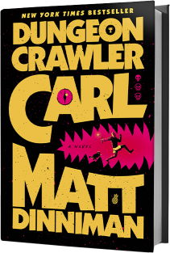
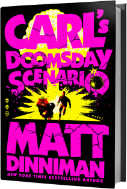
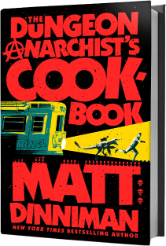
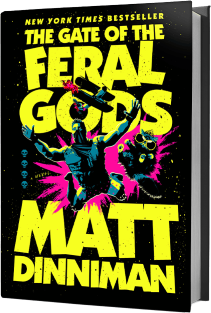
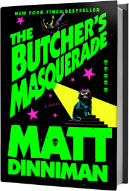
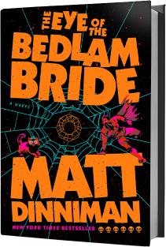
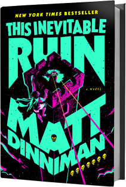
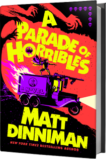

Books & Audio Books

Click here to go to the Audible audio book sample
NEW YORK TIMES BESTSELLER • The apocalypse will be televised! Welcome to the first book in the wildly popular and addictive Dungeon Crawler Carl series—now with bonus material exclusive to this print edition.
You know what’s worse than breaking up with your girlfriend? Being stuck with her prize-winning show cat. And you know what’s worse than that? An alien invasion, the destruction of all man-made structures on Earth, and the systematic exploitation of all the survivors for a sadistic intergalactic game show. That’s what.
Join Coast Guard vet Carl and his ex-girlfriend’s cat, Princess Donut, as they try to survive the end of the world—or just get to the next level—in a video game–like, trap-filled fantasy dungeon. A dungeon that’s actually the set of a reality television show with countless viewers across the galaxy. Exploding goblins. Magical potions. Deadly, drug-dealing llamas. This ain’t your ordinary game show.
Welcome, Crawler. Welcome to the Dungeon. Survival is optional. Keeping the viewers entertained is not.
Books & Audio Books

Click here to go to the Audible audio book sample
NEW YORK TIMES BESTSELLER • Join Carl and his ex-girlfriend’s cat, Princess Donut, as they fight fantastical creatures and deadly mobs to make it to the next level and build the kind of fan following the dungeon masters can’t ignore in the second book in the smash-hit Dungeon Crawler Carl series—now with bonus material exclusive to this print edition.
“Greetings, Crawlers! The training levels have concluded. Now the games may truly begin.”
The aliens have come, and they’ve transformed Earth into a multilevel, video game–like dungeon. It’s the newest season of the galaxy’s most watched game show, Dungeon Crawler World. Now on the third floor, Carl and Donut have to fight harder than ever. They’ve already proven that a Coast Guard vet and once-and-forever feline royalty are an almost unstoppable team. Their ratings are off the charts. Viewers can’t get enough. But the dungeon gets more dangerous each day, and now there’s a whole new problem to deal with: Quests.
They call it the Over City. A sprawling, once-thriving metropolis devastated by a mysterious calamity. But these streets are far from abandoned. An undead circus trawls the ruins. Murdered women rain from the sky. An ancient spell is finally ready to reveal its dark purpose. Can Carl and Donut solve the mystery in time?
And can Carl finally find some pants?
Books & Audio Books

Click here to go to the Audible audio book sample
NEW YORK TIMES BESTSELLER • The apocalypse will be televised! Welcome to the first book in the wildly popular and addictive Dungeon Crawler Carl series—now with bonus material exclusive to this print edition.
You know what’s worse than breaking up with your girlfriend? Being stuck with her prize-winning show cat. And you know what’s worse than that? An alien invasion, the destruction of all man-made structures on Earth, and the systematic exploitation of all the survivors for a sadistic intergalactic game show. That’s what.
Join Coast Guard vet Carl and his ex-girlfriend’s cat, Princess Donut, as they try to survive the end of the world—or just get to the next level—in a video game–like, trap-filled fantasy dungeon. A dungeon that’s actually the set of a reality television show with countless viewers across the galaxy. Exploding goblins. Magical potions. Deadly, drug-dealing llamas. This ain’t your ordinary game show.
Welcome, Crawler. Welcome to the Dungeon. Survival is optional. Keeping the viewers entertained is not.
Books & Audio Books

Click here to go to the Audible audio book sample
NEW YORK TIMES BESTSELLER • Follow Carl, Princess Donut, and Mongo as they fight their way to the next level in the fourth book in the Dungeon Crawler Carl series—now with bonus material exclusive to this print edition!
New Achievement! Total, Utter Failure.
You failed a quest less than five minutes after you received it. Now that’s talent.
Surviving in a multilevel dungeon that also happens to be the set of the galaxy’s most watched game show has taught Coast Guard vet Carl and his ex-girlfriend’s cat, Princess Donut, that there’s only one thing they can count on apart from each other: they never know what’s coming next. And this floor is no exception.
A floating fortress occupied by warrior gnomes. A castle made of sand. A derelict submarine guarded by malfunctioning machines. A haunted crypt surrounded by lethal traps.
It was supposed to be easy. One bubble. Four castles. Fifteen days. Capture each one, and the stairwell is unlocked. Here's the thing. It's never easy. Going it alone is not an option this time, so Carl and his team must rely on the help of the low-level, I-can't-believe-these-idiots-are-still-alive crawlers trapped in the bubble with them. But can they be trusted?
Welcome, Crawlers. Welcome to the fifth floor of the dungeon.
Books & Audio Books

Click here to go to the Audible audio book sample
Attention. Attention. The gates are down. The hunters are loose.
Run, Run, Run.
A lush jungle teeming with danger. Savage dinosaurs seeking blood. A fallen princess intent on vengeance. A mysterious, end-of-floor celebration for the top crawlers, dubbed “The Butcher’s Masquerade.” But that’s not all.
Just when Coast Guard vet Carl and his ex-girlfriend’s cat, Princess Donut, think they’ve seen it all as they compete to survive in the galaxy’s most popular game show, the latest dungeon level introduces a terrible new threat.
The sixth floor. The Hunting Grounds.
As the remaining crawlers battle for their lives, outside tourists are finally allowed to enter the game, and they are ready to hunt. Among them is Vrah, a famed and veteran hunter, intent on collecting the biggest trophy of her career.
But her prey is far from harmless, and this season they are fighting back.
Welcome, crawlers. Welcome to the sixth floor of the dungeon.
Books & Audio Books

Click here to go to the Audible audio book sample
Coast Guard vet Carl and his ex-girlfriend’s cat, Princess Donut, have survived longer and leveled up higher than anyone ever thought they could in the galaxy’s most popular reality show, but after the shocking conclusion of the seventh level, it’s now anyone’s game.
A pantheon of forgotten gods. An old grudge between a talk show host, an heiress, and the man they shattered along the way. A rapidly deteriorating AI system. An inconvenient tiara upon the head of a friend.
It is bedlam on the eighth floor.
The crawlers are given a new task: Find and capture six monsters, each of which will be turned into a card. The stronger, the deadlier, the better. At the end of the floor, the bad guys will also have decks, made of some of the most powerful cards available. So it’s crucial for crawlers to assemble the toughest squad possible. But, like always, there is a catch. There’s always a catch.
If Carl and Donut want a winning hand, they’ll have to capture the most lethal and terrifying monster of them all: Shi Maria. She was once married to a now-missing god. Her special attack is known to drive one insane. They call her the Bedlam Bride.
But even if Carl and Donut can capture her, they know all too well that just because someone has been captured, it doesn’t mean they have been tamed.
Welcome, Crawlers. Welcome to the eighth floor of the dungeon.
Books & Audio Books

Click here to go to the Audible audio book sample
The time has come! Book seven in the bestselling Dungeon Crawler Carl series is here! They call it Faction Wars. The ninth floor. Nine armies, each led by rich and powerful aliens from across the galaxy. Each team has one objective: to capture and hold the castle at the very center of the battlefield. Strategy, alliances, pitched battles, and, of course, betrayal... It all makes for great fun and even greater television. After all, none of these powerful aliens really die when they’re playing war. Except this time. This time, winner takes all. Those who fall, stay in the ground. As the AI continues its rapid decline, Carl and company take advantage of the chaos. For the first time ever, the crawlers are fighting back. They are now one of the nine teams. And this season, there’s a tenth army on the playing field. The NPCs, who are normally used as nothing but cannon fodder, have become fully self-aware and formed a team of their own. For Donut and Katia, the stakes are even higher. Only one of them will be allowed to leave this level. If they all want to survive, they’re going to need a little help from a veteran or two. This is it. This is what they’ve been fighting toward. This is war. This inevitable ruin.
Books & Audio Books

Release date: Audible audio book, hardcover & paperback available May 12 2026
It’s off to the races in the explosive eighth book in the Dungeon Crawler Carl series—featuring bonus material exclusive to this print edition.
As chaos and mass panic spread outside the dungeon in the wake of Faction Wars, Carl and Donut find themselves on the tenth floor, where they’re forced to compete in a surprisingly normal set of tasks. Well, normal for the dungeon.
Races. Get from point A to point B, and don’t come in last. After each race, they pick an upgrade for their vehicle and the track gets more challenging. It all seems a little too normal, a little too simple.
Ignore those strange glitches that are occurring with increasing frequency. Don’t listen to those whispers about what’s happening on the mysterious eleventh floor, something the system AI calls A Parade of Horribles. Nobody, not even the showrunners, knows what that means. Just that the AI has ominously dubbed it “a coming-out party for the ages.”
Everything is fine, Crawler. I repeat, everything is fine.
Carl hates that it’s business as usual. The rules of this floor have taken away his agency. That just will not do.
So Carl is planning a party of his own. It’s a plan so dangerous, so insane, he can’t even consult his friends lest the AI put a stop to it. Because if it goes wrong, it’s not just the end of Carl and Donut. No. The stakes are higher than they’ve ever been.